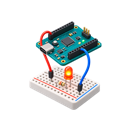
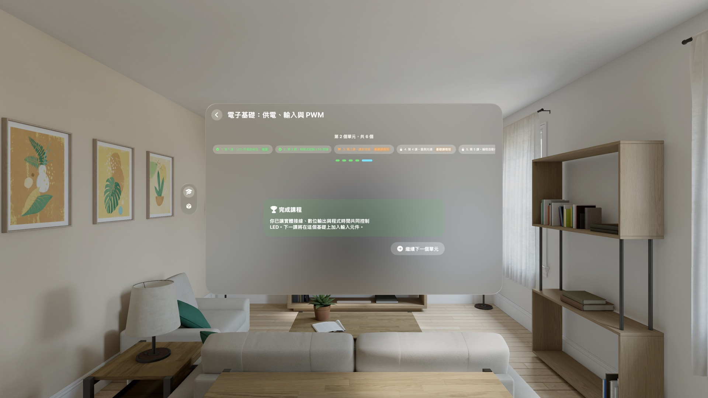
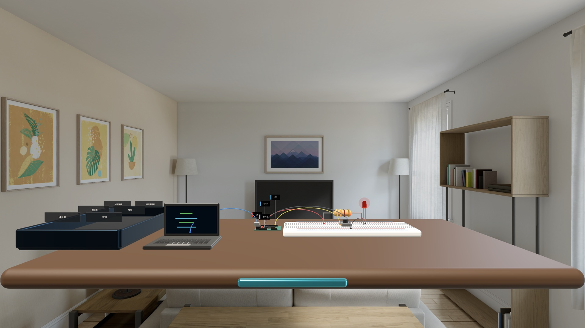
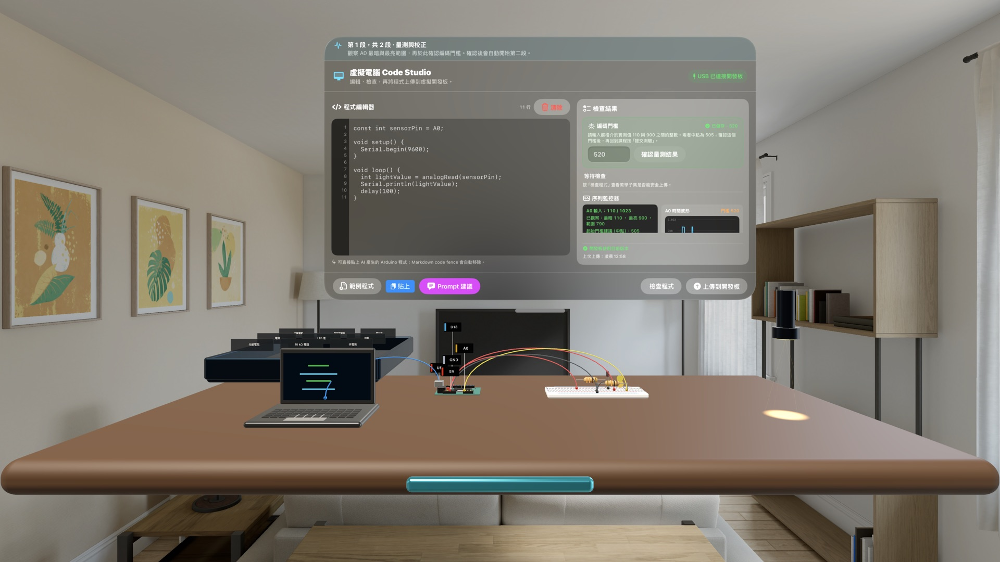
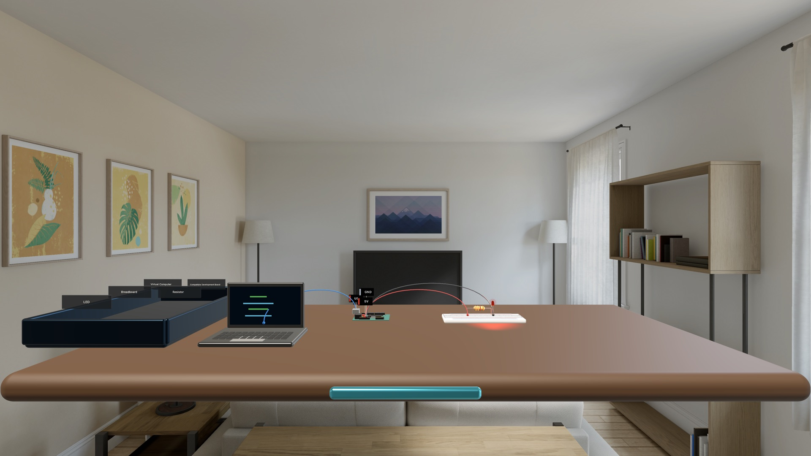
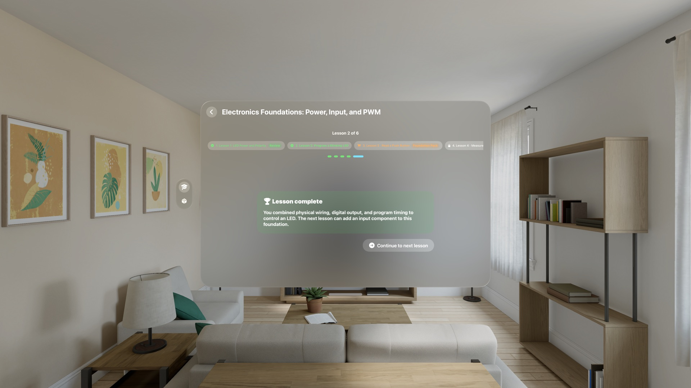
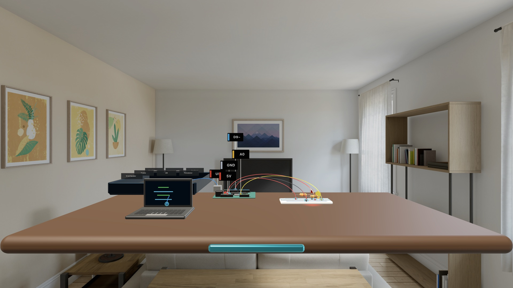
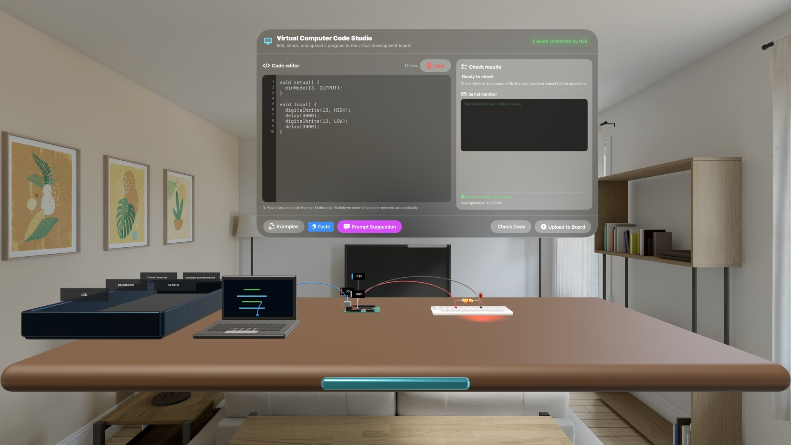
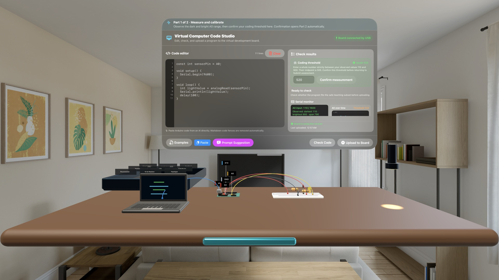
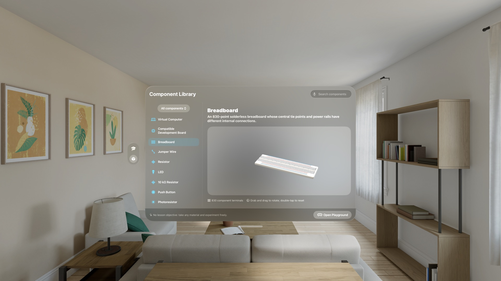

Apple Vision Pro · visionOS 1.0 已上架把房間變成電子實驗室，親手理解一條電路為什麼會亮。
空間電子實驗室把虛擬電腦、相容開發板、麵包板與元件放到眼前。你可以直接拉線、上傳教學程式，再用按鈕、手電筒與即時波形看見電路反應。
不是看完影片，而是看一次、做一次，再獨立完成
每個主題先用有旁白的示範建立概念，再進入聚焦的逐步重建；吸附接線與即時檢查降低空間操作的負擔，但不代替判斷。最後的無提示挑戰要你自己完成目標，通過後仍可回到已完成課程複習。

六課把單一 LED，逐步變成會感測環境的自動控制
Code Studio 把草稿、檢查與上傳分開
你可以輸入或貼上微控制器風格的教學程式。草稿不會立刻改變電路；程式先經安全子集檢查，再由你明確上傳到虛擬開發板。診斷區、序列監視器、類比數值與 PWM 遙測，會把程式行為和桌面上的實際結果放在同一個視野裡。
Prompt 建議只會整理與目前課程相關的文字，方便你主動複製到外部 AI 工具；App 本身不連接外部生成式 AI，也不執行任意原生程式碼。貼回的內容會先移除說明文字與 Markdown 外框，再在裝置端檢查。
按鈕與感測器不是靜態模型，而是實驗輸入
按下空間中的按鈕，數位輸入與 LED 會直接反應；移動手電筒靠近或遠離光敏電阻，A0 數值、門檻判斷與波形會一起更新。學習者必須用實際觀察到的亮暗範圍完成校正，再把結果帶進夜燈程式。


從課程走進自由實驗場與 3D 元件庫
元件庫收錄虛擬電腦、相容開發板、830 孔麵包板、跳線、電阻、LED、按鈕、光敏電阻、熱敏電阻與伺服馬達。每個元件都能在 3D 預覽中旋轉、放大並查看接點；自由實驗場則讓你自行取用材料、安排工作台與測試想法。
錯誤會留下可觀察、也可復原的後果
模擬器依實際端點、麵包板連通、元件值、已上傳程式與實體控制重新計算。短路、極性反接、浮接輸入、錯誤腳位、非 PWM 輸出與 LED 過電流不只是答案提示：它們會改變電路狀態，並提供診斷、聚焦與復原工具。這是教育模擬，不會控制實體開發板，也不取代真實電氣安全訓練。
前兩課免費；一次買斷完整基礎課程
Spatial Electronics Lab visionOS 1.0 已在 Apple Vision Pro 的 App Store 上架。免費下載並完成前兩課，再決定是否一次買斷後續基礎課程。
Turn your room into an electronics lab and learn why a circuit lights.
Spatial Electronics Lab places a virtual computer, compatible development board, breadboard, and components in front of you. Wire them directly, upload a teaching sketch, then use buttons, a flashlight, and live waveforms to see the circuit respond.

- Devices
- Apple Vision Pro
- Download
- Two free lessons · In-app purchase
Two free lessons; unlock the remaining four with a one-time purchase.
Not just a video: watch once, rebuild with guidance, then work independently
Each topic begins with a narrated demonstration, then moves into a focused guided rebuild. Magnetic wire snapping and immediate checks reduce the burden of spatial interaction without replacing judgment. A no-hints challenge asks learners to complete the objective independently, and finished lessons remain available for review.

Six lessons turn one LED into an environment-aware control

Code Studio keeps drafts, checks, and uploads distinct
Edit or paste microcontroller-style teaching sketches. A draft never changes the circuit by itself; code is first checked against a safe subset, then runs only after an explicit upload to the virtual board. Diagnostics, serial output, analog values, and PWM telemetry place code behavior beside the result on the workbench.
Prompt Suggestions prepare course-aware text that a learner can choose to copy into an external AI tool. The app does not contact an external generative-AI service or execute arbitrary native code. Returned text is stripped of surrounding prose and Markdown, then checked locally before it can be uploaded.

Buttons and sensors are experimental inputs, not static models
Press the spatial push button and the digital input and LED react directly. Move a flashlight toward or away from the photoresistor and the A0 value, threshold result, and live waveform update together. Learners must calibrate from readings they actually observe before carrying the result into the night-light sketch.

Move from structured lessons into the Playground and 3D component library
The library includes a virtual computer, compatible development board, 830-point breadboard, jumper wires, resistors, LEDs, buttons, photoresistors, thermistors, and a servo. Rotate and magnify each 3D part while reviewing its connection points, then take materials into the open Playground to arrange a workbench and test your own ideas.

Faults create observable and recoverable consequences
The simulator recalculates from actual terminals, breadboard connectivity, component values, uploaded firmware, and physical controls. Supply shorts, reversed polarity, floating inputs, incorrect pins, non-PWM outputs, and LED overcurrent change circuit state instead of becoming a simple answer label. Diagnostics, Focus, and Undo help learners inspect and recover. This is an educational simulation; it does not control a physical board or replace real-world electrical-safety training.
Try two lessons free, then unlock the complete foundation course once
Spatial Electronics Lab visionOS 1.0 is now available on the App Store for Apple Vision Pro. Download it free, finish the first two lessons, then decide whether to unlock the remaining foundation course with one purchase.